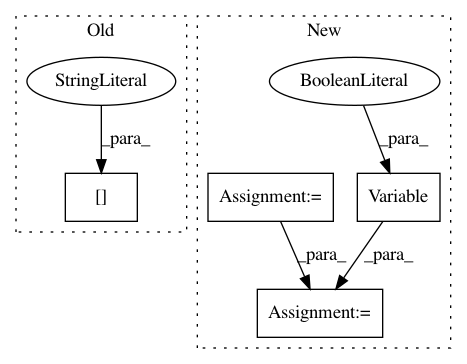

eb110220d9a39a294479433cefc274e42506737e,main.py,,main,#,75
Before Change
value_loss = (values[:-1] - Variable(returns[:-1])).pow(2).mean()
advantages = returns[:-1] - values[:-1].data
action_loss = -(Variable(advantages) * action_log_probs).mean()
optimizer.zero_grad()
After Change
episode_rewards *= masks[step].cpu()
returns[-1] = actor_critic(Variable(states[-1], volatile=True))[0].data
for step in reversed(range(args.num_steps)):
returns[step] = returns[step + 1] * \
args.gamma * masks[step] + rewards[step]
// Reshape to do in a single forward pass for all steps
values, logits = actor_critic(Variable(states[:-1].view(-1, *states.size()[-3:])))
log_probs = F.log_softmax(logits)
probs = F.softmax(logits)
// Unreshape
logits_size = (args.num_steps, args.num_processes, logits.size(-1))
log_probs = F.log_softmax(logits).view(logits_size)
probs = F.softmax(logits).view(logits_size)
values = values.view(args.num_steps, args.num_processes, 1)
logits = logits.view(logits_size)
action_log_probs = log_probs.gather(2, Variable(actions.unsqueeze(2)))
dist_entropy = -(log_probs * probs).sum(-1).mean()
advantages = Variable(returns[:-1]) - values
value_loss = advantages.pow(2).mean()
action_loss = -(Variable(advantages.data) * action_log_probs).mean()
optimizer.zero_grad()
In pattern: SUPERPATTERN
Frequency: 3
Non-data size: 4
Instances
Project Name: ikostrikov/pytorch-a2c-ppo-acktr
Commit Name: eb110220d9a39a294479433cefc274e42506737e
Time: 2017-09-16
Author: ikostrikov@gmail.com
File Name: main.py
Class Name:
Method Name: main
Project Name: tensorflow/tpu
Commit Name: 13765334b366d3f83e5efe6f1feae2203c1b2f63
Time: 2020-08-20
Author: gardener@tensorflow.org
File Name: models/official/detection/modeling/retinanet_model.py
Class Name: RetinanetModel
Method Name: build_losses
Project Name: pytorch/examples
Commit Name: a4e69725c0fa3d53312f546c185647e49d9e6602
Time: 2017-07-21
Author: Peterche1990@Hotmail.com
File Name: time_sequence_prediction/train.py
Class Name:
Method Name: